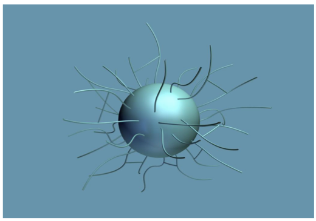
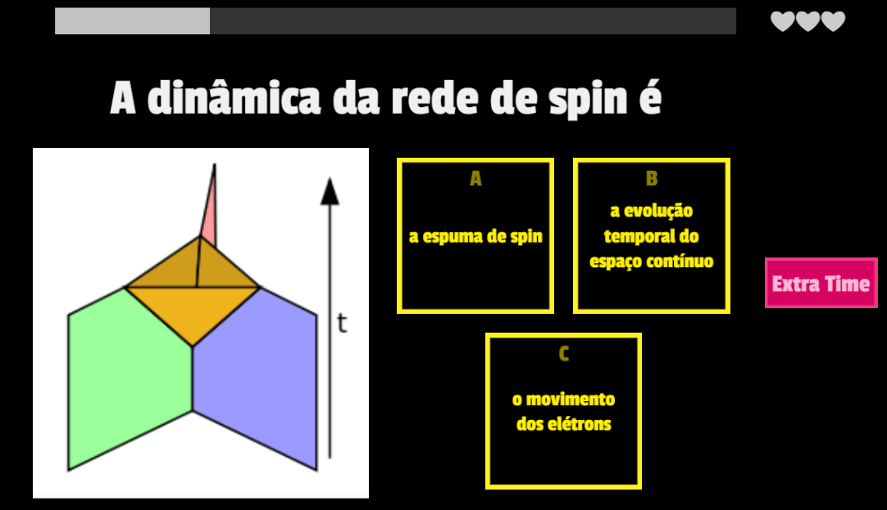
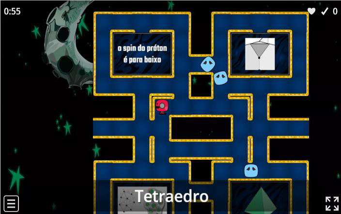

CAPÍTULO 5 - A RELAÇÃO DA QUANTIZAÇÃO DO ESPAÇO-TEMPO COM A ENTROPIA DOS BURACOS NEGROS
5.1 - O Parâmetro Barbero-Immirzi
Antes de tratarmos sobre a energia do buraco negro, veremos sobre o parâmetro BarberoImmirzi.
O parâmetro Barbero-Immirzi 𝛾, combina a entropia semiclássica do buraco negro com a contagem de microestados na LQG, sendo então proporcional à área.
O parâmetro aparece porque a entropia conta o número de linhas que perfuram o horizonte de eventos e o parâmetro é proporcional à área contribuída por cada perfuração. O parâmetro não tem qualquer efeito no regime clássico, pois mede o quantum de área em unidades de Planck.
A área do horizonte de eventos é consequência do grande número de lados da rede de spin que atravessam a superfície e cada lado da rede com spin j, contribui para uma porção, dando uma área total da superfície. Cada spin j aumenta a dimensão por um fator (2j + 1), que é a dimensão de representação de spin j.
Se tiver um número N grande de lados com spins j, com i = 1, ...., N, perfurando o horizonte, a entropia é dada pelo logaritmo dessa dimensão de representação de spin, na forma
Sendo 𝑁 =𝐴𝐴𝑗, calculado pela área do buraco negro A, assim, temos
Considerando a entropia de Hawking da Eq. (3.4), então é da forma S = A/4ℓ𝑃2, então, utilizando as Eq. (5.1) e (5.2), isolando N, temos que
Por exemplo, para spin j = 1/2, temos para 𝛾, o parâmetro na forma (BRANCO, 2005).
5.2 - A Energia dos Buracos Negros
Para o tratamento da energia dos buracos negros, Stephen Hawking no começo dos anos 70, considerou que os buracos negros são “quentes” e à medida que emitem calor, perdem energia, que consequentemente perdem massa, se tornando menores. Esse processo se dá na forma de evaporação e por isso chamou de Radiação de Hawking, conforme Eq. (3.9).
Sabemos que em objetos quentes existem átomos em sua constituição microscópica que se movem e se chocam uns com os outros, por isso o calor, devido a agitação das moléculas e por isso ao considerarmos os átomos constituintes do buraco negro, Hawking deixou um problema em aberto: Se um buraco negro é quente, quais átomos elementares vibram?
A teoria dos loops responde que os átomos elementares do buraco negro que vibram, responsáveis por sua temperatura, são os quanta isolados de espaço que estão na superfície.
É o resultado da vibração de cada loop, ou seja, de cada átomo de espaço. Por isso o horizonte flutua como um corpo quente. Essas flutuações se dão pela correlação entre o interior e o exterior do buraco negro (ROVELLI, 2014).
E como fica a energia do buraco negro? A energia do buraco negro para um observador a uma distância d do horizonte de eventos é da forma,
Repare que não faz sentido o observador ficar muito longe do buraco negro, pois sua energia tenderá a zero, o que não é o caso.
Um observador que permanece a uma distância fixa d do horizonte de eventos e a aceleração a = 1/d do buraco negro em seu próprio referencial. Como a área do horizonte é 𝐴 = 4𝜋(2𝐺𝑀) 2, para um observador estático perto do horizonte, a energia é da forma
Se considerarmos a área do horizonte de eventos da superfície esférica, temos a área da superfície igual a
Se variar a área, irá variar a energia do buraco negro, então temos que
Quando entra partícula, informação, matéria, no buraco negro, aumenta a sua massa. Um observador próximo do horizonte de eventos irá observar uma pequena parte desse horizonte (ROVELLI; VIDOTTO, 2014).
Mas e a entropia nisso? Quanto maior a entropia do buraco negro, maior a sua área e em compensação maior a falta de informação que temos. Mas o que a informação tem nisso? Qualquer matéria ou informação que temos ao entrar no buraco negro, essa matéria ou informação se perde. Não podemos mais recuperar, por isso a falta de informação. Vista de fora do buraco negro, a informação aparece como entropia associada à área do buraco negro (ROVELLI, 2014).
No capítulo 3, vimos que a entropia é relacionada na razão da quantidade de calor com a temperatura de um sistema isolado. Ver a Eq. (3.3). Como a quantidade de calor também é energia, podemos associar a entropia na forma
Bill Unruh (1976) mostrou que um observador se movendo no estado de vácuo com aceleração a num campo quântico, observa uma temperatura, na forma
Se relacionarmos essa expressão com a Eq. (5.8) e (5.9), temos
Que é a entropia de Bekenstein-Hawking. A temperatura de Hawking nada mais é do que a temperatura de Unruh que um observador acelerado mede nas proximidades do buraco negro (apud ROVELLI; VIDOTTO, 2014).
5.3 - Dinâmica da Entropia dos Buracos Negros
O observador externo ao buraco negro não sabe o que acontece no seu interior. Então vê o buraco negro simplesmente como uma superfície bidimensional evoluindo no tempo. Logo, o horizonte de eventos pode ser tratado como um sistema dinâmico independente da região externa.
Se considerarmos um buraco negro sem carga e rotação, temos um sistema formado por uma superfície esférica com área A. O interessante para nós é o que acontece nas proximidades do horizonte de eventos e num contexto térmico, observaremos o comportamento desse horizonte numa espécie de flutuação quântica, nada mais do que um “tremor”.
Como seria essa análise nesse horizonte? Utilizando a abordagem de gravidade em loop, para analisarmos a entropia de um buraco negro, é necessário analisar o número de estados de uma superfície bidimensional com área A.
Como a discrição é geométrica, será considerada a área dos links “linhas” de uma rede de spin j no cruzamento do horizonte, conforme o operador de área da Eq. (4.7)
O observador próximo ao horizonte interage no máximo com uma pequena parte do horizonte de eventos, por isso o problema pode ser analisado com um único elo de cruzamento da rede de spin, ou seja, uma única perfuração no horizonte de eventos (ROVELLI; VIDOTTO, 2014).

Considerando a entropia da Eq. (5.10) e substituirmos com o operador de área, temos a entropia na forma
Não existe contradição na entropia do buraco negro com relação aos efeitos das flutuações quânticas do horizonte e entropia de emaranhamento, no caso as redes de spins no horizonte.
São duas faces do mesmo fenômeno. As flutuações são os tremores no horizonte que geram flutuações de geometria que vai até a escala de Planck. O caso do emaranhamento do horizonte considera todos os campos quânticos presentes.
A entropia do buraco negro considera o observador acelerado e relacionado com flutuações quânticas e ao emaranhamento através do horizonte. Esta observação pode ser feita para buracos negros realistas, como o de Schwarzchild e o de Kerr (ROVELLI; VIDOTTO, 2014).
5.4 - Exercícios
1. O que você entende pela relação da quantização do espaço-tempo com a entropia dos buracos negros?
2. Considere a equação(5.3). Qual é o parâmetro Barbero-Immirzi para spin j=1?
3. João se encontra a uma distância d do horizonte de eventos de um buraco negro de massa M. Pedro se encontra a uma distância d/2 do horizonte de eventos do mesmo buraco negro, observado por João. Qual alternativa corresponde à realidade de energia entre os dois observadores?
4. Um buraco negro possui área A=p+2q e aceleração a. Com o passar do tempo, houve a entrada de partículas, obtendo nova área A'= 3p+q e aceleração 2a. Qual é a relação entre p e q para que houvesse um aumento de 20% de energia?
5. Considere a equação da entropia de um buraco negro da Eq. (5.11). Se o spin na relação é s = 1/2, qual é a entropia desse buraco negro?
5.5 - Jogo: Show de Perguntas
O jogo foi criado com objetivo de intensificar os assuntos abordados e pode ser encontrado no site:
https://wordwall.net/play/17869/134/995

Procedimento
O estudante irá colocar o nome no campo indicado da página inicial e clicar na barra azul “começar”.
A aparência do jogo é como se o jogador estivesse diante de uma plateia, sendo constituído de 15 questões de múltipla escolha que vêm de forma aleatória, com 3 opções. O enunciado aparece na parte superior da tela, seguida de uma imagem que facilita a possibilidade de o estudante selecionar a opção correta.
Existe uma barra na parte superior do enunciado, mostrando o tempo de 30 segundos que o estudante tem para responder à pergunta, seguida de 3 corações à direita da barra, correspondendo a quantidade de chances “vida” que tem para continuar no jogo. Cada vez que o estudante perder a questão, perde o coração “vida”.
Cada questão vale 100 pontos, somada com o tempo rápido respondido, onde terá uma variação maior do que 100 pontos.
Se o estudante precisar de mais tempo para responder à pergunta, terá somente uma única chance para clicar na opção “tempo extra”, sendo adicionado 2 minutos e 10 segundos. Ao longo do jogo não terá mais essa opção.
Para cada 4 perguntas, o jogo irá apresentar a “rodada de bônus”, com 5 cartas. As cartas na cor verde, representa bônus para o jogador, com as seguintes possibilidades: +200 pontos, + 100 pontos, + 50 pontos e Tempo Extra. As cartas na cor vermelha, representa azar para o jogador, com as seguintes possibilidades: - 200 pontos, - 100 pontos, - 50 pontos, Perder Vida, x2 speed e x3 speed.
As duas últimas possibilidades da carta vermelha, mostram a velocidade com que o tempo irá passar no próximo enunciado.
As 5 cartas inicialmente serão apresentadas ao jogador, em determinadas posições e embaralhadas com costas viradas, mostrando o ponto de interrogação.
O jogador deverá clicar em uma das 5 cartas que acreditar ser bônus. Após isso, o jogo mostrará a carta que o jogador clicou e dependendo da informação na carta, será penalizado (vermelho) ou bonificado (verde) e enquanto o jogador tiver vidas, poderá responder as perguntas (SILVA, 2020a).
5.6 - Jogo: Fuja dos Fantasmas
O jogo foi criado com objetivo de tornar o aprendizado de forma lúdica. Os estudantes, passaram por trabalhos teóricos, experimentais e por isso, chegamos na fase de tornar o ambiente ainda mais atraente.
https://wordwall.net/play/17870/858/249

Procedimento
O estudante irá colocar o nome no campo indicado da página inicial e clicar na barra azul “começar”.
A aparência inicial do jogo, apresenta o jogador saindo de uma nave espacial e indo em direção ao espaço sideral.
Inicialmente o jogador terá duas “vidas”, ou seja, 2 corações que aparecem no canto superior direito da tela, com duração total de 30 minutos.
O jogo apresenta na tela inicial, semelhante a um labirinto. O objetivo do jogador é conduzir o boneco vermelho que se encontra no centro do labirinto, até o local adequado, em uma das 4 posições apresentadas com imagens de acordo com a informação passada na parte inferior da tela.
O jogador através dessa informação, conduzirá o boneco na região que acredita ser a correta, porém existem fantasmas na cor azul clara, verde e lilás, com olhos vermelhos que irão perseguir, impedindo o boneco vermelho de chegar no local desejado.
Para deslocar o boneco vermelho, o jogador deverá utilizar as setas do teclado (cima, baixo, direita e esquerda).
Ao conduzir no local correto, o boneco vermelho irá sorrir e brilhar, sinalizando felicidade, onde o jogo mostrará que o jogador acertou a jogada. Se conduzir ao local errado, o boneco não ficará feliz e o jogo mostrará que o jogador errou a jogada.
Existem caminhos na parte mais externa do labirinto que o jogador ao conduzir o boneco, sairá do outro lado do labirinto, o que favorece em possível “perigo” que o boneco se encontrar.ao entrar
Se um fantasma encostar no boneco vermelho, perderá uma vida. O jogo começa com 3 fantasmas azul claro, que são mais lentos e nas próximas jogadas, aparecem 4 fantasmas, variando com cores, pois o verde é mais rápido do que o azul claro, e o lilás é mais rápido que o verde.
Ao conduzir o boneco vermelho no local errado, se ainda tiver “vida”, o boneco sairá do local errado e continuará no labirinto, sendo este local fechado. Logo, o jogador terá as 3 possibilidades para conduzir o boneco no local adequado (SILVA, 2020b).
5.8. O projeto de pesquisa
O projeto de pesquisa finaliza os trabalhos e oportuniza condições para os alunos- pesquisadores desenvolverem as atividades, no sentido de serem criativos e participativos.
Serão divididos em dois grupos: Alfa e Beta. Os alunos-pesquisadores com prazo de 2 meses, irão pesquisar sobre os buracos negros supermassivos selecionados pelo professor.
O objetivo geral é pesquisar a distância dos buracos negros supermassivos da Terra, bem como suas massas. Com isso, os grupos com seus respectivos objetos celestes, irão transformar os dados de acordo com o Sistema Internacional, ou seja, em vez de massa solar, transformarão em quilograma e a distância em metros.
O objetivo específico é estimar através dos dados da massa e distância dos buracos negros supermassivos, o cálculo do raio, energia e entropia, para posteriormente estimar o número de perfurações dos links da rede de spin.
Dados técnicos: 1 ano-luz = 9,5.1015 metros/Massa solar 𝑀⨀ = 2,0.1030 kg/Constante de gravitação universal G = 6,7.10-11 m3kg-1s-2/Velocidade da luz c = 3,0.108 m/s/Constante de Boltzmann k = 1,38.10-23 m2kg K-1s-2.
Equações para os trabalhos(R = 1,5.10-27.M), (E = 1,34.10-10.M2/d), (A = 2,3.10-19.M2), (S = 3,5.1043.A ou S = 8,05.1024. M2) e (perfuração N = S.1,45).